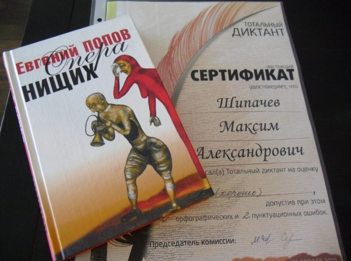

Награждение кемеровчан, принявших участие 23 апреля в «Тотальном диктанте», состоялось вчера в одной из аудиторий КемГУ. Награждали, конечно, не всех 610 участников, а только тех кто сделал не очень много ошибок.
В числе не очень многих людей, сделавших не очень много ошибок, оказался и я. Хотя одна из участниц, получившая «5», высказалась, что диктант был несложным, мне (человеку, писавшему диктанты почти 20! лет назад) так не показалось. Многие участники, к примеру, допустили орфографическую ошибку, написав Московский университет с маленькой буквы. Речь в тексте шла о годах Великой Отечественной войны, поэтому в обсуждении на сайте диктанта специалисты отмечали, что пишущие диктант должны были знать о существовании в те годы только одного московского университета. Много было вариаций и с пунктуацией, вроде сочетания запятая-дефис.
Итоги тотального диктанта в Кемерово выглядят так:
из 610 участников получили оценку «5» - 4 человека (0,8%) «4» - 33 человека (7,2%) «3» - 97 человек (21,1%) «2» - 476 человек (70,9%)
На награждение пришло не очень много народу. Пришли все (четыре) отличницы (из них только две — студентки). Мне в подарок досталась неизвестная книга «Опера нищих» неизвестного автора Евгения Попова. Говорят хорошая.

В следующем году «Тотальный диктант», вероятно, повторят. Хотя и планируют делать это «отдельно от Новосибирска». Настоятельно рекомендую. Это как раз тот случай, когда и участие приятно тоже.